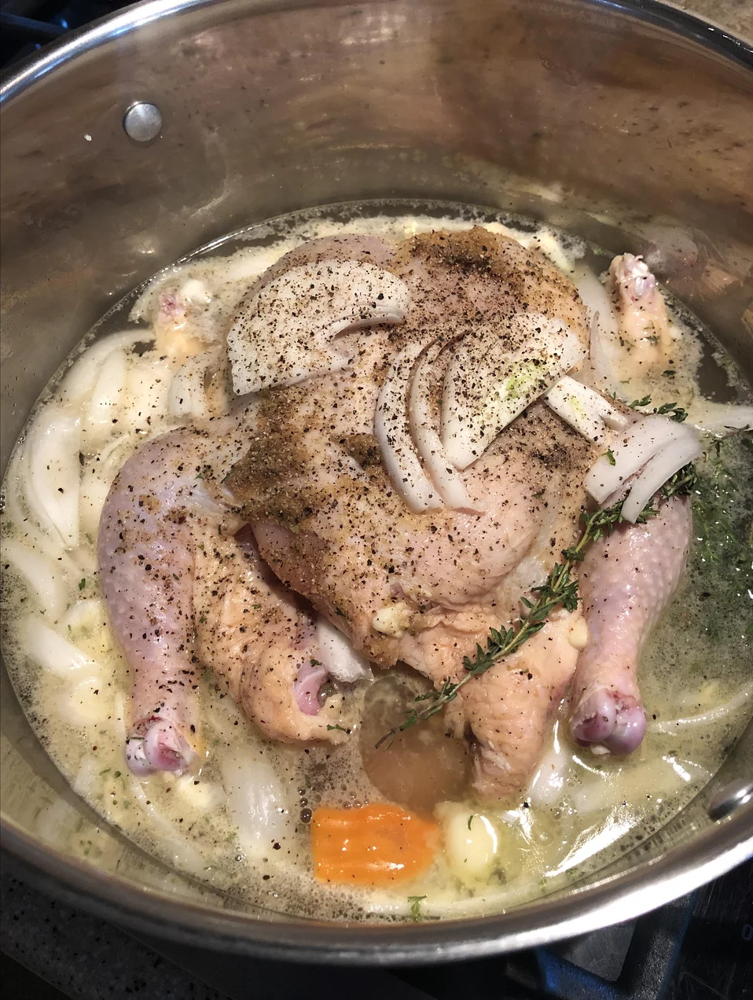

Boiled Chicken

How to make boiled chicken
Per Serving: 186 calories; protein 16.3g; carbohydrates 4.5g; fat 11.1g;
cholesterol 46.1mg; sodium 64mg.
Ingrediants
- 1 (3 pound) whole chicken
- 1 large onion, halved - unpeeled
- 3 carrots, cut into chunks - unpeeled
- 2 stalks celery, cut into chunks
- 1 tablespoon whole peppercorns
- water to cover
Steps
-
Place chicken in a large pot with onion, carrots, celery and
peppercorns; add water to cover. Cover pot and bring to a boil; reduce
heat to a gentle boil and cook for about 90 minutes, or until chicken
meat is falling off of the bone. Remove chicken, let cool and shred or
chop the meat.